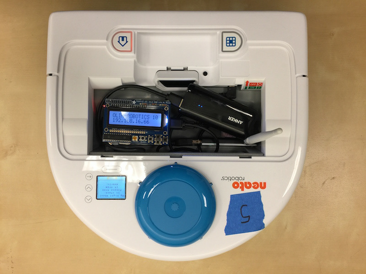
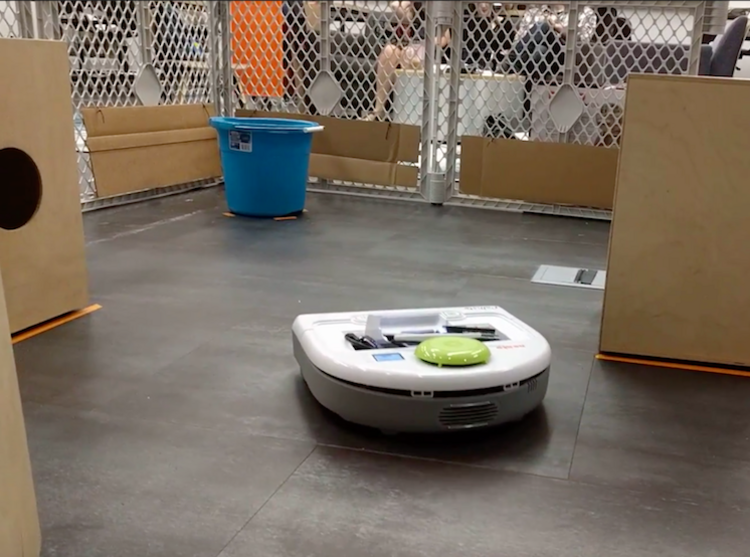
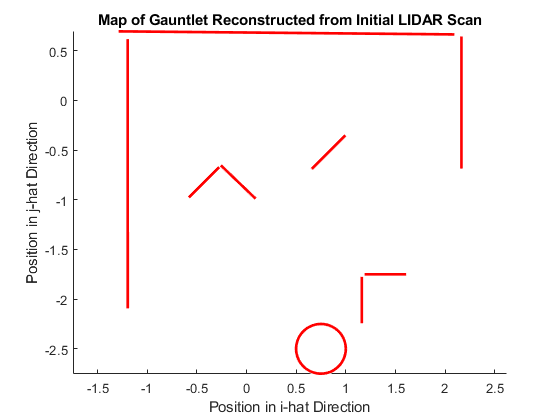

In this project, I programed a Neato vacuuming robot to traverse an obstacle course. The Neato was placed in an arena with several boxes that served as obstacles. The goal was for the Neato to autonomously scan the environment using it’s LIDAR sensor, plan a course (avoiding the obstacles), and make its way to the goal object, a round barrel.
|  |  |
|---|
On the left is the robot that I programed. It is a repurposed Neato vacuum robot. On the right is an image of the course the robot was placed in.

The robot is first placed at the coordinate location (0,0). It then uses it’s LIDAR sensor to scan its surroundings. In the image above, the black dots represent the objects the LIDAR sensor detected. Using these data, the robot then autonomously creates a path towards the goal object and drives along it. In the image above, the red path shows the robot’s final path from its origin to its target, a round barrel.

Before creating the path, the robot first uses a RANSAC algorithm to transform the initial LIDAR data into a set of lines and a full circle for the barrel. The lines represent objects that the robot should avoid, and the circle is the object that the robot should drive towards.

In order to plan the path, the robot then constructs a potential field of the map. The highest peak in the field represents is the barrel that the robot is trying to reach. All the divots in the potential field represent objects that the robot is trying to avoid. To create a viable path, the robot preforms a gradient ascent. The process of gradient ascent is for the robot to always travel in the direction of gradient. By following the gradient of the potential field, the robot will travel from the origin to the local maximum while avoiding all of the divots. This results in a path that avoids the real world obstacles and heads toward the target barrel.
This is a video of a simulation of a successful run. The robot first scans the environment, plans a course, and finally drives along the path until it reaches the target.